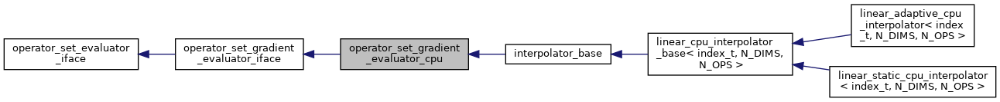
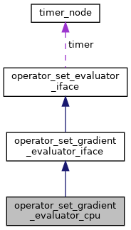

A class for evaluation of operators values and their gradients on host Provides straightforward device implementation by sending input data to host, calling the host function, and sending the output back to device. More...
#include <evaluator_iface.h>
Inheritance diagram for operator_set_gradient_evaluator_cpu:

Collaboration diagram for operator_set_gradient_evaluator_cpu:

Additional Inherited Members | |
 Public Member Functions inherited from operator_set_gradient_evaluator_iface Public Member Functions inherited from operator_set_gradient_evaluator_iface | |
| virtual int | init () |
| Initialize evaluator, default empty implementation Adds a possibility to initialize the object using properties assigned after construction. More... | |
| virtual int | get_axis_n_points (int axis) |
| Get the number of supporting points for the given axis, default empty implementation. More... | |
| virtual double | get_axis_min (int axis) |
| Get the minimum value for given axis, default empty implementation. More... | |
| virtual double | get_axis_max (int axis) |
| Get the maximum value for given axis, default empty implementation. More... | |
| virtual uint64_t | get_n_interpolations () |
| Get the number of interpolations that took place, default empty implementation. More... | |
| virtual uint64_t | get_n_points_used () |
| Get the number of supporting points used, default empty implementation. More... | |
| virtual uint64_t | get_n_points_total () |
| Get the total number of supporting points in parameter space, default empty implementation. More... | |
| virtual int | evaluate_with_derivatives (const std::vector< double > &states, const std::vector< int > &states_idxs, std::vector< double > &values, std::vector< double > &derivatives)=0 |
| Compute operators values and their gradients for every specified state. More... | |
| Public Member Functions inherited from operator_set_evaluator_iface | |
| operator_set_evaluator_iface () | |
| Construct a new operator set evaluator iface object. More... | |
| void | init_timer_node (timer_node *timer_) |
| Initialize timer node to provide timing for operator set evaluation. More... | |
| virtual int | evaluate (const std::vector< double > &state, std::vector< double > &values)=0 |
| Compute operators values for specified state. More... | |
| Public Attributes inherited from operator_set_evaluator_iface | |
| timer_node * | timer |
Detailed Description
A class for evaluation of operators values and their gradients on host Provides straightforward device implementation by sending input data to host, calling the host function, and sending the output back to device.
Definition at line 207 of file evaluator_iface.h.
The documentation for this class was generated from the following file: